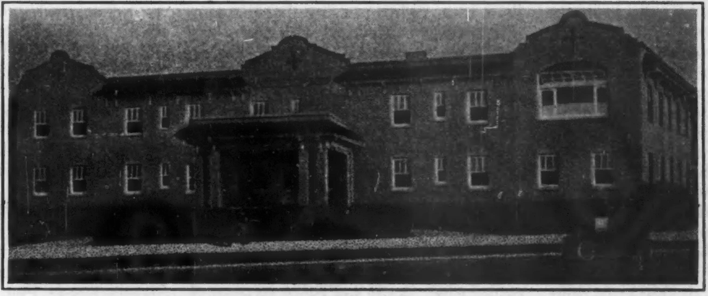

Dalton, GA
Juliette Derriocotte was fatally injured in Dalton, Georgia. Dalton is the county seat of Whitfield County and is forty miles southeast of Chattanooga. It had in 1930 a population of 8,160, of which 1,028 were Negroes. There were among the whites, 2840 ten years of age in 1920 who were illiterate, and among the Negroes, 120. Dalton is a shipping point for cotton, cattle, grain and fruit, and has cotton mills with 976 looms and 94,000 spindles. It has canning factories, flour mills, foundries and machine shops. It was founded in 1848 and incorporated in 1874 and was the scene of some fighting when Bragg retreated there from Chattanooga in 1863. It is, of course, a religious town. There are 5 white churches and 6 Negro. It figured for a time as a health resort; it is the seat of Dalton Female College. There are public schools and weekly newspapers and a national bank.
In particular, for our purpose, there is the Hamilton Memorial Hospital, with a complete modern equipment, supported by public taxation.
Miss Derricotte, with three other passengers, was traveling to her home in Athens, Ga., to settle certain business matters for her family. She had with her Nina Johnson, a senior at Fisk, Edward Davis, a student who lives in Athens, and Marian Price, another student who lives in Atlanta. They were traveling by automobile in order to avoid the “Jim-crow” cars of the South, and the difficulty in getting meals and other transportation.
We left Chattanooga about three o’clock. Miss Derricotte was driving. I was in the front seat with her; Miss. Johnson and Miss Price were in the rumble seat. We had been driving along at a fair rate of speed and were about a mile and a half out of Dalton. I was talking to Miss Johnson and Miss Price when I suddenly turned around and noticed another car very close to us. A second later the two cars hit each other. Miss Derricotte snatched the steering wheel to the right, turned it loose and called to me. When I reached for the steering wheel the car was beginning to turn and by the time I got hold of it the car was turning over. I then turned the wheel loose and threw up my hands in an effort to save myself. The last I remember then was hearing the crash.
The next thing I remember, I was lying in a field. Miss Derricotte was lying near me groaning.
There immediately began a series of investigations. Mrs. Ethel B. Gilbert, an official at Fisk University, heard of the accident, telephoned and rushed to Chattanooga. Thence, she wrote various private letters. Other officials came from Fisk University, including Dr. Elmer S. Imes and Warner Lawson. The President of Fisk University later began an investigation; the Secretary of the N.A.A.C.P. stopped in Chattanooga and inquired into the facts; finally, the Commission on Interracial Co-operation of Atlanta made an investigation “at the request of Fisk University and other organizations interested in ascertaining the facts of the situation.” After that, the participants in the accident were requested to make no further statements and the Y.W.C.A., so far as we know, did nothing.
Let us compare now, the report of the Inter-racial Commission and statements from other sources. First, as to what happened directly after the accident:
| Inter-Racial Commission | Other Reports |
|---|---|
| Mr. and Mrs. Helton, unhurt, climbed out through the broken windshield of their car and went immediately to Miss Derricotte’s car… Mr. Helton stated that he hurried someone off to call for an ambulance. | About this time a white man dressed in overalls came up and asked me what I was going to do about his car. I asked what was the matter with his car. He told me it was his car we had hit. I told him I would have to wait until we had received medical attention. I did not see him any more. ~Davis. |
| No ambulance came. | I then began to make appeals for help from the people standing around. One man informed me that they had already sent for an ambulance. ~Davis. |
|
Mrs. Gordon Mann White, who lives nearby, and at the time of the collision was between her home and the highway, saw the collision and ran immediately for her car. Mrs. Mann, who brought Miss Johnson in, stated that she inquired where Negroes could get treatment, and was told to go to a doctor’s office, which she did. Miss Johnson was taken to the office of Dr. J Steed, a physician with a record of many years’ service in Dalton. Miss Derricotte was taken to the office of Dr. O. E. Shellhorse. Miss Price and Mr. Davis were taken to the office of Dr. G Broaderick These three doctors, all white, have offices within two blocks of each other on King street. Dr. Steed states that Miss Johnson was unconscious when brought to his office and never regained consciousness, and it was evident from the first that she was seriously wounded. |
The man took us into Dalton. We were near the center of the town when he asked a number of people where the hospital was. A few did not know; others said there was no hospital for Negroes; and others said they would have to take us to some doctor’s home. He drove on farther and asked a white boy about a hospital or a doctor. The boy told us his father was a doctor and lived right up the street. He took us to his home. This doctor’s name was Dr. Broaderick. ~Davis. |
| Miss Derricotte was taken to Dr. O. E. Shellhorse’s office and placed on his operating table. She was in a semi-conscious condition, being in possession of her faculties a part of the time, and indicating that she had severe pains in her chest and hip. Dr. Shellhorse states that he examined her thoroughly, saw the seriousness of her condition and called in for consultation Dr. Ault. | By this time Miriam was able to call in to Chattanooga to Mr. Trimble’s home, and he told her that he was sending an ambulance down as soon as he could. We asked Dr. Broaderick to send his son to get some information about Miss Derricotte and Miss Johnson, which he did. The son reported that they had been taken from Dr. Steed’s to a colored sanitorium. ~Davis. |
|
When Miss Derricotte had been treated by Dr. Shellhorse, he called the local Negro undertaker, Mr. Johnson, and asked him to build a fire and prepare a room for Miss Derricotte in the home of Mrs. Alice Wilson, colored, 3 Emory Street. The physicians of Dalton have been taking patients to Mrs. Wilson’s home for a number of years, and major operations have been successfully performed there. Mrs. Wilson is without formal training or professional standing. |
The house was in very bad order and there was no evidence of facilities for handling such cases as this there. The bed which Mrs. Wilson vacated to answer our knock was the bed in which Miss Derricotte or Miss Johnson had lain for five or six hours. It was a very uncomfortable looking and not very clean folding bed. ~Dr. Imes. |
| Shortly after six o’clock when Miss Price had been treated, Dr. Broaderick’s son called the Trimble home in Chattanooga, where Miss Derricotte and the three Fisk students had lunched in the early afternoon, and Miss Price told of the accident and asked that an ambulance be sent. Miss Price also made calls to Fisk University informing people there of the accident. | I have found out that they were removed to the “house where Negroes are sent in emergencies.” The three men visited that house, were met at the door by an ugly, barefooted woman who showed them the folding beds where the two seriously injured ones had been put. If anybody makes a report that says in effect “everything that could be done was done,” it merely means that everything that could be done for Negroes was done. ~Mrs. Gilbert. |
| Upon arrival at the Wilson home, Miss Derricotte and Miss Johnson were placed on a bed and a couch respectively, and Doctors Wood and Shellhorse came to see them shortly. | The whole impression of this house was one of disorder and dirt which the owner explained by saying that she had only returned after seven months’ absence. It was sickening and heartbreaking to us to think of Miss Derricotte and Miss Johnson having been allowed to lie there and suffer for five long hours in their critical condition, denied the care and medical treatment that might have possibly saved both lives. ~Warner Lawson. |
|
Miss Price asked Dr. Shellhorse, according to Dr. Shellhorse’s statements, if Miss Derricotte could be moved to Chattanooga. He advised against this in the presence of one of the men from Chattanooga who had come with the Trimble car and ambulance, and there was an understanding that Miss Derricotte would remain at the Wilson home. Dr. Shellhorse, upon leaving the Wilson home, gave instructions to Mrs. Wilson and asked her to call him if Miss Derricotte got worse, saying he would come back early next morning if he had no call in the meantime. When he went to the Wilson home early next morning he was surprised to find that Miss Derricotte had been taken to Chattanooga. Without regaining consciousness, Miss Johnson was placed in the ambulance upon its return and died before reaching Chattanooga. Miss Derricotte, who was placed at the Walden Hospital in Chattanooga, died about six o’clock the following evening (Saturday, November 7). |
We were taken around to the colored sanitarium, which proved to be a very dirty home. We found Nina and Miss Derricotte in separate beds close to each other. There were no doctors there when we arrived. Nina was unconscious. Miss Derricotte was conscious and rather hysterical. Miriam left me to quiet Miss Derricotte as much as possible while she went to telephone their parents and to put in a call for their local doctor. About half an hour later a white doctor came in and attended to Nina; while he was there Mr. Trimble and Dr. Patton of Chattanooga came. A little later Dr. Steed came in. About eleven o’clock it was decided to move Miss Derricotte to Chattanooga in the ambulance. They started off very slowly. Nina was put in another ambulance. Miriam and I and were put in Mr. Trimble’s private car and came in behind the ambulance. Miriam was taken to the Trimble home and I was taken to the Walden Hospital. Miss Derricotte was also taken to the Walden Hospital. I was given treatment and the next morning Mrs. Gilbert informed me that Nina had passed away during the night. Saturday afternoon I was told that Miss Derricotte was dead.” ~Davis. |
| Miss Duke, resident nurse in charge of the Hamilton Memorial Hospital, stated that no one of the Negroes in the accident had been brought there. When asked whether Miss Derricotte and Miss Johnson would have been treated had they been brought to the Hamilton Memorial Hospital, Miss Duke hesitated and said: “I do not see that we could have done otherwise.” She stated that there are no precedents for the answer to this question, in that no Negro had ever been brought to the hospital for care, stating that it was generally understood that Negroes were not treated there. |
I: How soon was she removed to the house where Negro patients are taken? Dr. Steed: Just as soon as first aid was administered. I: To your knowledge, was any attempt made by anyone to get them into Hamilton Memorial Hospital? Dr. Steed: Oh, no’m. We don’t take ’em there. I: But knowing the seriousness of this particular case, did no one attempt to get them in in spite of the usual procedure? Dr. Steed: Oh, no, m’a’m, You see, we don’t even have any wards for them there. ~Mrs. Gilbert. |
| Doctors Shellhorse, Steed and Broaderick stated that a colored ward was needed at the Hamilton Memorial Hospital and that some work had been done to that end during the past two years. | I asked Dr. Shellhorse the same question, and he told me that she (Miss Derricotte) was there an hour and a half before she was removed to the home. I asked him if he believed at the time that she was fatally iniured and he replied: “Why, yes. I was sure she was going to die.” I asked him what he would say the cause of the death would be and he replied a severe shock. He also said in answer to my question in regard to an attempt to get them into the hospital, “No, not that I know of.” ~Mrs. Gilbert. |
It must be remembered that the reports by Mrs. Gilbert, Edward Davis, Dr. Imes and Warner Lawson, were made on the spot within a few hours after the accident. While, on the other hand, the report of the Inter-Racial Commission was made some time after and with at best the unconscious purpose of making out a case for the South.
There remain, naturally, irreconcilable discrepancies. The story that emerges is that very soon after the accident and at the appeal of Davis, white neighbors rushed the wounded persons to town. That the man who ran into them, at first demanded compensation for his car, and then disappeared. That in town, neither white nor colored people knew at first what to do but at last it was agreed that the patients must be taken to physicians’ offices. The physicians gave them attention for an hour and a half. They knew that two of them were desperately injured and needed the utmost care. Miss Johnson’s pulse was 150 and Miss Derricotte was alternately hysterical and unconscious. Nevertheless, they had them transported to a house with no hospital facilities and left them there without professional attendance for several hours; finally, the Chattanooga ambulance arrived and took them away.
 The George W. Hamilton Memorial Hospital, supported by public taxation, at Dalton, Georgia, to which no Negro citizen may be admitted.
In the light of this, what shall be said of the civilization of Dalton, Ga? We can say this best in the words of Mrs. Ethel Gilbert. She had long been connected with Negro education in the South and came to Dalton and Chattanooga immediately after the accident. She reported her facts and feelings in a private letter to a friend, which we venture to quote, without permission. Her words are so true and fair that they make a human document which must not be suppressed. She says:
I am nearly crazy. Juliette was dearer to me than almost any woman alive. I took that ride from Dalton to Chattanooga in the night, dressed in a woolen dress with a fur coat on and was chilled clear through from shock and anxiety. The road had a long detour, about fifteen miles, I should say, of rough dirt road. It is impossible to think of the horror of so severely injured a person being jolted over those roads after her hours of agony in Dalton. I shall always have to compare in my mind all of the things that were done that would not have been done to me if I had been injured. I shall always have to remember that, within one-half hour after the accident, I would have been in a modern hospital. I shall always have to think of Juliette dying in a place that could not be dignified by the name of a hospital except that the beds were a few inches higher than the beds would have been in a boarding house and that they had a few bed pans. All of the people in that little place were kindness and courtesy itself, but that does not take the place of the clean walls, the soft-footed, sure-fingered nurses, the well-equipped operating room, the comfortable bed, the shaded lights, the efficient doctors, that I had when I was taken into a hospital for an emergency operation.I feel very strongly that this incident should be used in some way, preferably in the way Juliette would like best, to help this whole rotten situation down here. She was loved by a great many people who might pay attention to an injury to her who would not be deeply concerned if just anybody were involved. I wish that the Y.W.C.A. or some liberal magazine in New York could make an investigation and put material in all of our hands that could be used as widely as possible. And while we are doing it, I hope we will all remember that the whole system is rotten and wicked and unspeakably cruel, not simply because it operated to harm someone whom we love very much but because it would harm any poor ignorant, wicked, unfortunate victim of an accident if he happened to be a Negro. I think that is the approach Juliette would want to have made. If there is anything under heaven that I can do to help in any way, let me do it.
I have been uneasy and unhappy in this situation for four years. No one understood my position better than Juliette did. From now on it will be increasingly difficult to bear at all. It makes being white about the hardest thing one has to put up with in a very sorry section of the world.